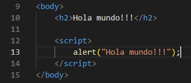
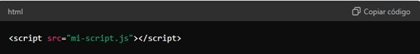
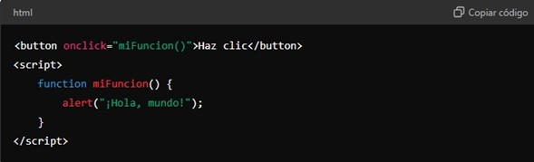
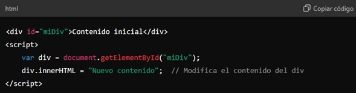
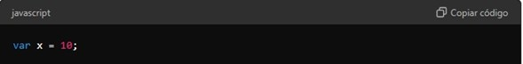
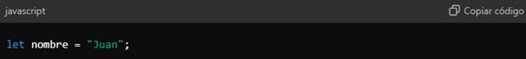
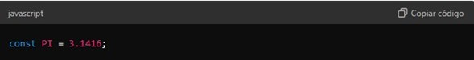

¿Que es JavaScript?
JavaScript es un lenguaje de programación interpretado, liviano y de alto nivel que se utiliza principalmente para crear contenido dinámico en páginas web. Es un componente fundamental del desarrollo web moderno, permitiendo a los desarrolladores implementar interactividad y comportamientos complejos en las aplicaciones web
Características clave:
o Lenguaje de alto nivel: Facilita la escritura de código con sintaxis más cercana al lenguaje humano. o Interpretado: Se ejecuta directamente en el navegador del usuario sin necesidad de compilación previa. o Dinámico: Permite cambios y actualizaciones en tiempo real en la interfaz de usuario sin necesidad de recargar la página. o Multiplataforma: Compatible con todos los principales navegadores web y sistemas operativos
¿Cómo utilizar JavaScript en una página web?
JavaScript se integra en una página web principalmente a través de la etiqueta script en HTML. Aquí están las diferentes formas de incorporar JavaScript: 1. Incorporación en línea: - El código JavaScript se escribe directamente entre las etiquetas script y /script.
2.Archivo externo: Es una práctica común escribir el código JavaScript en archivos separados con extensión .js y luego incluirlos en HTML utilizando la etiqueta script con el atributo src: Donde mi-script.js es el nombre del archivo que contiene tu código JavaScript.
3.Manejo de eventos: JavaScript permite responder a acciones del usuario (eventos) como clics de botones, movimientos del mouse, ingreso de teclado, entre otros: - Aquí, onclick es un evento que llama a la función miFuncion() cuando el usuario hace clic en el botón.
4.Manipulación del DOM: JavaScript facilita la interacción con el Document Object Model (DOM), que representa la estructura de la página web:
Manejo de variables en JavaScript
En JavaScript, las variables se utilizan para almacenar datos. Puedes declarar variables utilizando var, let, o const: -var: Declaración tradicional de variables en JavaScript. Tiene alcance de función. Las variables var pueden ser re-declaradas y actualizadas.
- let: Introducido en ES6 (ECMAScript 2015), tiene alcance de bloque y es preferido para la mayoría de las declaraciones de variables. Las variables let están limitadas a su ámbito de bloque (dentro de {}).
-const: También introducido en ES6, define una constante cuyo valor no puede cambiar después de la asignación inicial. Las variables const deben inicializarse con un valor y no pueden ser reasignadas.
Tipado dinámico: JavaScript es un lenguaje de tipado dinámico, lo que significa que no es necesario especificar el tipo de dato al declarar una variable. El tipo de dato puede cambiar durante la ejecución del programa.